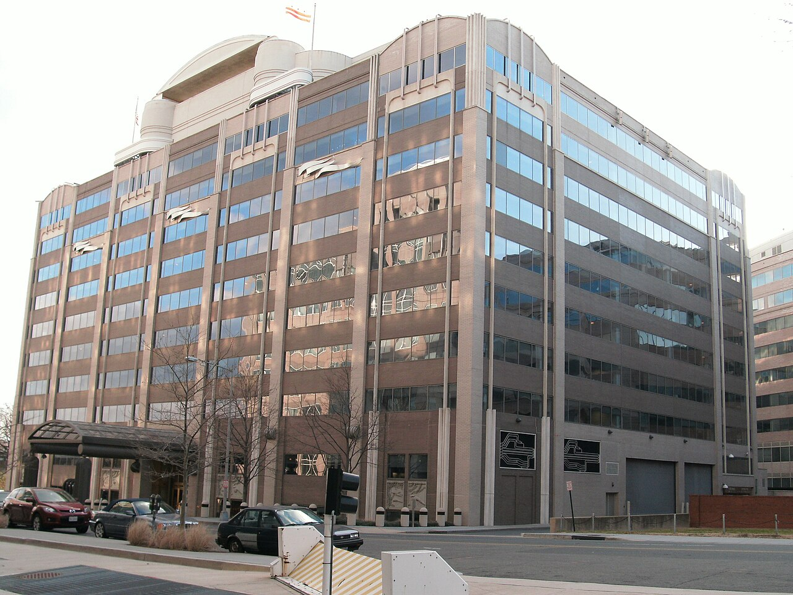

GRIEVANCE XVI ◆ FREEDOM OF EXPRESSION
He has threatened the broadcasters of unwelcome news with the power of the state.
THE RECORD SHOWS
Trump has urged license sanctions against broadcasters over editorial decisions, while the FCC has warned that reporting certain polls might implicate regulatory rules.

Broadcast licenses belong to local stations and revocation requires legal process; the president cannot revoke a network license by declaration. That limitation is central to the grievance: the threats themselves exert pressure on independent journalism.
A DOCUMENTED SEQUENCE
3 MILESTONES- April 2026The FCC ordered unusually early license reviews for eight ABC-owned broadcast stations.
- July 2026Trump demanded license consequences for ABC and NBC; a Democratic FCC commissioner called the threat unconstitutional.
- August–October 2026ABC challenged the reviews in court, while the FCC chair raised regulatory concerns about alleged distorted polling coverage.